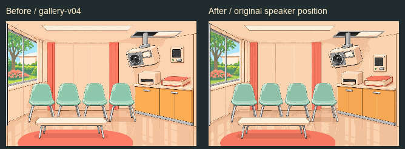
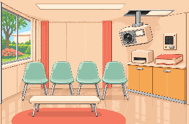

Before4×

One corrected314×206 main-scene candidate, with restored printer and closed album. The approved564×278 conversation image remains byte-for-byte unchanged. Treat the apparent difference as camera framing.
Corrected wide candidate · Before / after PNG · Source selection and QA · Hashes and position check


No other artwork produced or altered. Earlier versions preserved. No story JSON, engine or production changes.